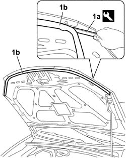

7025A62 BONNET LID WEATHERSTRIP - R+R
- Path
- Procedures > 70 FITTINGS > 7025 COMPARTMENT COVERS > 7025A BONNET LID > 7025A62 BONNET LID WEATHERSTRIP - R+R
- Kind
- repair procedure (removal / refitting; the operation number is the code)
- Applies to
- all engines; all production periods
- Interactive page
- https://sloeber94.github.io/elrnDB-fCrm/en/#/194000964
Applies to: all engines; all production periods
 Removing
Removing
 Refitting
Refitting- Open the bonnet.
1. Using the special tool (1a), release and remove the weatherstrip (1b) from the bonnet.
Tool | Description | Function | Validity |
|---|---|---|---|
1878077000 | Knife | Retainer removal |

Applies to: all engines; all production periods
Refitting
Removing- Fit the weatherstrip for the bonnet in its housing.
- Check that the mountings for the seal are properly inserted in the housing.